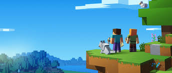

Minecraft is een Open World-game gelanceerd in 2011. Het kan gespeeld worden in de modus singleplayer of de modus multiplayer. Bij dit spel kan men in een uitgestrekt gebied kubusvormige objecten plaatsen op een rooster. Het spel bouwt automatisch een omgeving, met grondstoffen, tegenstanders, dieren, tunnelsystemen, bergformaties en meren. De speler heeft een eigen avatar, waarmee hij de omgeving actief kan aanpassen.Het spel kan op een server, met een LAN-verbinding of offline worden gespeeld; in het laatste geval door het (tegen betaling) te downloaden van de officiële website van Minecraft. De betaalde versie op de pc is inmiddels al meer dan 24 miljoen keer verkocht en is intussen over alle platformen meer dan 110 miljoen keer verkocht. Minecraft is geschreven in Java en het werd aanvankelijk ontwikkeld door de Zweed Markus Persson (alias Notch) en tegenwoordig door het door hem opgerichte bedrijf, Mojang AB. De officiële versie is in Nederland uitgekomen op 18 november 2011. Het werd gepresenteerd tijdens een conventie voor Minecraftspelers, genaamd MineCon 2011.
Minecraft is een zogenaamd openwereldspel, waarbij de speler vrij rond kan lopen door een virtuele wereld, zonder een vooraf vastgesteld doel. Het belangrijkste kenmerk van het spel is het reizen door en ontdekken van grotten en kerkers en het bouwen van gebouwen en voorzieningen. De speler kan grondstoffen delven, deze tot andere voorwerpen verwerken en vechten tegen monsters (mobs). Ook zijn er enkele speciale mogelijkheden, zoals het maken van automatische verbindingen door middel van redstone, en kunnen gereedschappen van een betovering (enchantment) worden voorzien. De betoveringen zijn door het spel bepaald, maar de mogelijkheden van redstone zijn bijna onbeperkt. Er kunnen bijvoorbeeld zeer complexe dingen, zoals echt werkende rekenmachines en robot-achtige constructies mee gemaakt worden. Minecraft kent verschillende dimensies. De Nether, geïmplementeerd in de Alpha-versie op 30 oktober 2010, is de eerste extra dimensie die in Minecraft werd gemaakt. Later waren er plannen om een droomwereld toe te voegen, alhoewel dat uiteindelijk The End is geworden.
De standaardmodus om Minecraft te spelen is "survival", wat inhoudt dat de speler in een bepaalde wereld moet zien te overleven. Om in leven te blijven moet de speler op zoek gaan naar voedsel, dat verkregen kan worden door bijvoorbeeld dieren te slachten of graan en groente te verbouwen. Ook moet de speler zich verdedigen tegen vijandelijke mobs die 's nachts ontstaan en de speler proberen te doden. In de survivalmodus zal de speler zelf bouwmaterialen moeten verzamelen door het omhakken van bomen en het uithakken van gesteenten.
De andere Minecraftspelversie heet "Classic", ook bekend als creatief (creative). Hierbij is er geen limiet aan de beschikbare bouwmaterialen, zodat deze niet opgegraven of gezocht hoeven te worden. Ook heeft de speler in deze versie extra mogelijkheden, zoals vliegen, kan hij niet aangevallen worden door vijandelijke mobs, of doodgaan in lava of door een fatale val.
Dit is de wereld waar de speler begint en waar het personage leeft. De normale wereld bestaat uit verschillende zogeheten biomes, elk met hun eigen soort landschap en begroeiing. Zo zijn er gemengde loofbossen, berken-, eiken- en dennebossen, junglebossen, woestijnen, berglandschappen, savannes, taiga's en oceanen waarin soms een mushroom island voorkomt. In de normale wereld zijn er ook verschillende weersomstandigheden: het kan regenen en onweren en in sommige gebieden sneeuwen. In deze landschappen komen zo nu en dan door het spel gegenereerde bouwwerken voor, zoals dorpjes, woestijn-, jungle- en onderwatertempels en onder de grond zogeheten spawners waarin vijandelijke mobs ontstaan. De dorpjes worden bevolkt door dorpelingen, waarmee de speler handel kan drijven door dingen te ruilen.
Sinds Halloween 2010 is het mogelijk om naar de Nether te reizen. De Nether wordt - net zoals de gewone wereld - willekeurig gegenereerd. Om in de Nether te komen moet de speler een portaal maken van obsidiaan en dat in brand steken, waardoor dan een paars portaal ontstaat. Als de speler gedurende vijf seconden in dat veld staat reist hij naar de Nether. Op de plek waar men terechtkomt in de Nether staat een portaal waarmee men weer terug naar de normale wereld kan reizen. Dit portaal ziet er hetzelfde uit als het portaal om naar de Nether toe te gaan. Er zijn minder verschillende soorten blokken aanwezig in deze dimensie dan in de normale dimensie.Daarnaast zijn er verschillende wezens die leven in de Nether, zoals: 'Ghasts' (vliegende, vuurbalspuwende wezens), 'zombievarkens' (passief totdat ze worden aangevallen en als de speler er een raakt komen ze allemaal op hem af), Blazes (vliegende beesten die vuur naar de speler toe spuwen en die afkomstig zijn van monsterspawner), 'Wither Skeletons' (Wither Skeletons zijn zwart van kleur, in de normale wereld is er een witte variant die 'Skeletons' worden genoemd), en 'magmakubussen', een soort slijmkubus die hoog kan springen met een springveer. Vanaf Beta 1.6 is de Nether ook toegankelijk in multiplayer.
Sinds de vierde prerelease van Beta 1.9 kan men naar The End (soms The Ender genoemd). Het is een duistere wereld van vliegende eilanden van endsteen. Op het hoofdeiland waar men aankomt staan pilaren van obsidiaan, op de andere eilanden groeien chorusplanten en kunnen End Cities genereren. Verder zijn er veel endermannen, en sinds Beta 1.9 prerelease 6 is er ook een Enderdraak, een nieuwe soort tegenstander. Spelers kunnen The End alleen verlaten door dood te gaan of de Enderdragon te verslaan. Als de speler voor de laatst genoemde optie kiest dan heeft de speler het spel "uitgespeeld" en volgt de aftiteling. Hierna kan men door het ontstane Endportaal weer terugkeren naar de gewone wereld. Aanvankelijk was ontwikkelaar Persson medio mei begonnen met het ontwikkelen van een droomwereld, gedoopt tot de Sky Dimension. Hoewel de code al volledig functioneel was, gaf Persson aan dat hij het er lelijk uit vond zien. Aan de screenshots te zien waren de grondstoffen vrijwel hetzelfde als in de normale wereld. Persson speculeerde dat zodra de speler ging slapen in zijn bed, er een geringe kans was dat hij of zij in de droomwereld, oftewel de Sky Dimension terecht zou komen. Aan de schermafbeeldingen is ook te zien dat de Sky Dimension ver boven de wolkenlaag ligt, te ver om te bereiken in de normale wereld. Wellicht zou de speler in theorie gewoon van een zwevend eiland naar de normale wereld kunnen springen, en héél misschien ook weer terug. In de toekomst heeft Persson wel het plan om de Sky Dimension toch volgens het oude concept in te voeren, dit in tegenstelling tot veel spelers die denken dat The End de Sky Dimension vervangt. Vanaf Beta 1.6 zat de Sky Dimension ook daadwerkelijk in de broncode van Minecraft, maar kan nog niet op legale wijze worden betreden. Wel is er een modificatie te downloaden die één bestand in de broncode verandert, zodat de werelden standaard als een Sky Dimension worden gegenereerd.
"The Void" (de leegte) is de laag onder de bodemsteen die alleen bereikbaar is door de onderste laag te breken, dit is alleen mogelijk in de creative-modus. Als de onderste laag is gebroken, valt de speler naar beneden en gaat hij dood. Dit is tevens de enige manier om dood te gaan in de creative-modus, maar de speler kan wel vliegen in The Void. Als hij te ver naar beneden valt zal hij wel dood gaan. The Void is ook te vinden boven de reeds beschreven Nether.
| Jaar | Platform |
|---|---|
| 2010 | Browser, Linux, OS X, Windows |
| 2011 | Android, IOS |
| 2012 | Xbox 360 |
| 2013 | PlayStation 3, Raspberry Pi |
| 2014 | PlayStation 4, Xbox One, PlayStation Vita, Windows Phone |
| 2015 | Windows 10, Wii U |
| 2017 | Switch, New Nintendo 3DS |